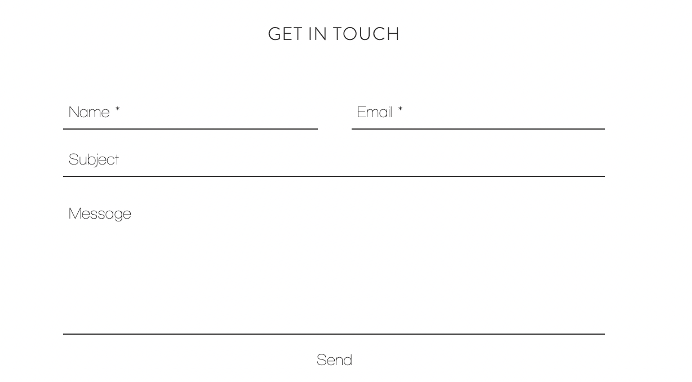

Contanct Me

My name is Zhengyu Li and I am a Master of Computer Science student in University of Illinois at Urbana-Champaign.
Student of technology. Art appreciator. Digital craftsman. I make software and artistic projects. Welcome to my website.